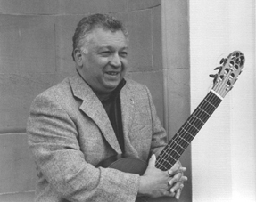

|
|  |
Caracas, Venezuela, 1955 alfonso.montes@web.de |
Alfonso Montes nace en Caracas en 1955, comienza estudios de música desde la Infancia. Tras recibir lecciones de guitarra de Carlos Atilano y Leopoldo Igarza se traslada a Londres donde sigue estudios con el compositor-guitarrista John Duarte (1976-1982), durante este tiempo obtiene el diploma ARCM en el Royal College of Music así como sigue estudios de analisis y técnicas de composición con Adrian Thorne en el Guildhall School of Music.
Se destaca como profesor en varias Instituciones y festivales:
Cannington International Summer School (1980-1991), University
College of Music in London (1980-1982), Instituto Universtario de Estudios
Musicales de Caracas IUDEM (1985-1987), coordinator of the Sistema de Orquestas
Juveniles de Caracas, (1985-87) Gersteten Conservatory in Germany (1988-1991)director
of the International Guitar Festival in Cambridge (1991-1992).
En 1992 es nombrado Attaché Cultural en la embajadas venezolanas de Londres y posteriormente en Bonn. (1992-97). Durante 1998 y hasta el 2000 ocupa la posición de Director General de Relaciones Internacionales del Consejo Nacional de la Cultura.
Debido a sus convicciones democráticas y anti-corrupción,
es sometido a persecuciónes y amenezas por parte del régimen
del Teniente Chávez, lo cual lo obliga a emigrar a finales
del 2000.
Desde entonces (2000) reside en Stuttgart en compañía
de su esposa Irina Kircher, destacada guitarrista y pedagogo alemana. Ambos
actuan como dúo Montes Kircher desde hace 20 años siendo
considerados uno de los más prestigiosos ensables de guitarra de
su generación.
La música de Alfonso incluye ademas de obras para
concierto, composiciones para cine y teatro. Es representada y grabada
internacionalmente por prestigiosas orquestas, ensambles, y solistas.